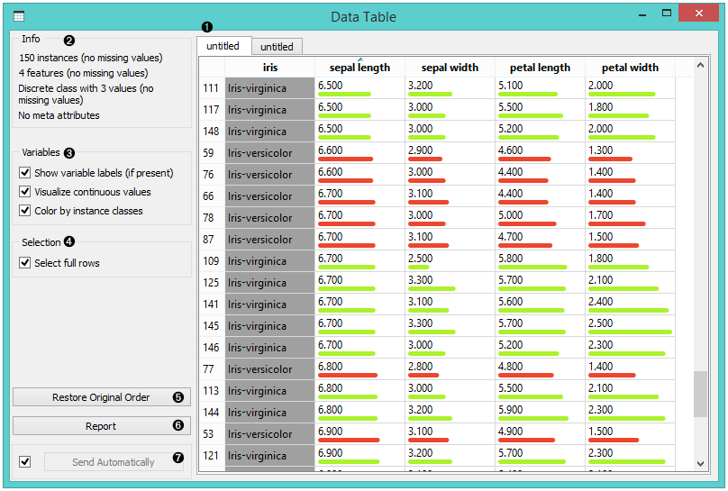
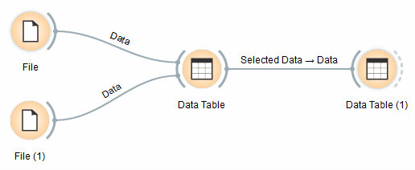
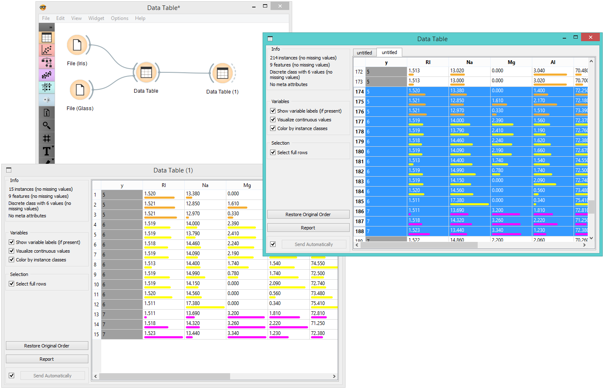

Data Table
Displays attribute-value data in a spreadsheet.
Inputs
- Data: input dataset
Outputs
- Selected Data: instances selected from the table
The Data Table widget receives one or more datasets in its input and presents them as a spreadsheet. Data instances may be sorted by attribute values. The widget also supports manual selection of data instances.

- The name of the dataset (usually the input data file). Data instances are in rows and their attribute values in columns. In this example, the dataset is sorted by the attribute “sepal length”.
- Info on current dataset size and number and types of attributes
- Values of continuous attributes can be visualized with bars; colors can be attributed to different classes.
- Data instances (rows) can be selected and sent to the widget’s output channel.
- Use the Restore Original Order button to reorder data instances after attribute-based sorting.
- Produce a report.
- While auto-send is on, all changes will be automatically communicated to other widgets. Otherwise, press Send Selected Rows.
Example
We used two File widgets to read the Iris and Glass dataset (provided in Orange distribution), and send them to the Data Table widget.

Selected data instances in the first Data Table are passed to the second Data Table. Notice that we can select which dataset to view (iris or glass). Changing from one dataset to another alters the communicated selection of data instances if Commit on any change is selected.
